INSTITUTIONAL REPOSITORY
MitoMapa in the Mediateca
Find the published Spanish edition of MitoMapa in the Canary Islands Government’s Mediateca.
Open in the MediatecaA journey through stories and heritage
Choose an island, read its story and complete the challenges to earn a piece.
Look at the shapes and colours to rebuild the map. Drag one piece onto another or select two pieces to swap them. Choose “Show solution” if you need help.
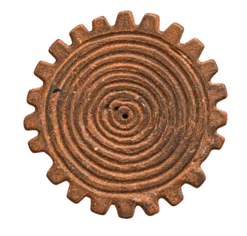
The badges you earn appear here automatically. You can open the passport from the top bar at any time. Your progress is saved in this browser.
How do you earn a piece? In Early Years and the first primary cycle, you earn it by completing the comprehension challenge. At other stages, complete both comprehension and true or false. To finish your route, do the research and creative work your teacher sets.
The passport pieces are modern recreations: Seven vessels take inspiration from pottery references, and a seashell represents La Graciosa. They are interpretive designs and their association with an island is educational.
You can complete the work you agreed to do with any number of pieces.
Collect all eight pieces for your learning stage to unlock your certificate in the passport and try the optional final challenge.
Optional final challenge unlocked
Match each clue to its island. All the legends are part of the same expedition. You can claim your certificate at any time once you have collected all eight pieces.
Work together to make an audio story, a short play, a kamishibai, a comic or a sequence of illustrations.
| Include | Check your work |
|---|---|
| Island and setting | Can we find them on the map? |
| Characters and conflict | Can we recognise the myth or legend? |
| Refrain | Can the audience repeat it? |
| Your own retelling | Have we explained what we added? |
| Accessibility and credits | Can someone follow it with the sound off? Have we credited the images? |
Your feedback matters
You can give feedback after one or more island routes. Your answers have no effect on your pieces or grades. Leave out names and other personal information.
Choose a number from 1 (very little) to 5 (a lot), or choose “I can’t say”. Your answers stay on this screen until you download a copy.
Help us improve MitoMapa by sending your feedback to sugerencias.mitomapacanario@gmail.com. Download the file and attach it to your message. If you are a pupil, ask your teacher or a family member for help.
The link opens your email app. Attach the file you downloaded and send the message.
For different learning stages: Teachers choose the curriculum links, tasks and support. Explore one island in a 45-minute session, two islands in four sessions of about 50 minutes, or the optional full collection in eight to ten sessions of 35–50 minutes. An agreed route can be complete once the planned islands have been reviewed. The eight-piece collection is a separate activity. See the guidance in the teacher space.
Authors: Jesica Fortes Regalado; Gloria Elsa González Martín; Cristian García Santana. Narration: Zeus Plasencia Carballo. Select Play to listen. You can choose the voice on its own or add quiet natural background sounds. Audio credits. Map: Relief map supplied by the authors. Source: Canary Islands Government TongApp. The site uses the image from the supplied file. Original SVG file. According to the TongApp notice supplied by the authors, the Government of the Canary Islands owns the map and the educational community may use it freely. The map is governed by those terms. The CC BY-SA 4.0 licence applies to the original materials created for MitoMapa. Illustrations: Eight scenes and ten pintaderas were created for MitoMapa. The original record names OpenAI ImageGen as the tool and Astra 6 as the assistant specified by the authors. These are contemporary designs. The pintaderas draw on the reference from El Museo Canario. Their assignment to islands is part of this educational resource. Licence for original materials:  CC BY-SA 4.0.
CC BY-SA 4.0.
To plan a session, see the teacher guide. The reuse guide helps teachers connect the activities to curriculum criteria at each stage. Teachers select and review those links before institutional use.
Editorial approach: the resource distinguishes documented traditions, research questions and fictional scenes. For historical or archaeological claims, consult the sources for each island.
We thank everyone consulted on historical, technical and teaching matters during the development of MitoMapa Canario. Their feedback helped us improve the content, the way the resource works and the learning activities.
Find the sources and links for each topic in the Investigate section of the relevant island route. Check links and accessibility before formal academic publication.
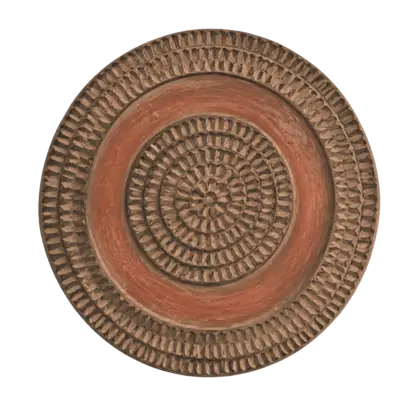
A resource to share and adapt
You may keep, copy, adapt and share this resource, including for commercial use, provided you credit its creators and retain the CC BY-SA 4.0 licence. State what you have changed. The licence covers the original materials for which the creators hold rights. External resources retain their own terms.
INSTITUTIONAL REPOSITORY
Find the published Spanish edition of MitoMapa in the Canary Islands Government’s Mediateca.
Open in the Mediateca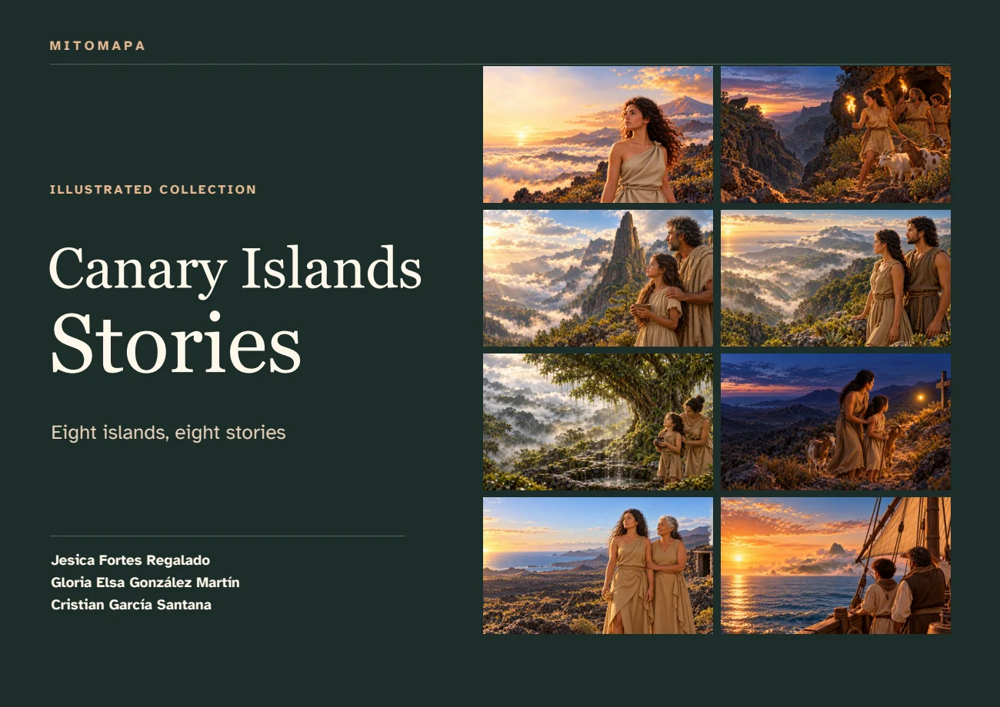
ELPX · English edition
The eXeLearning project includes stories, built-in activities, recordings and an expandable teacher guide. It provides guidance for different stages and an example using two islands over four sessions. Teachers choose how to connect the activities to the curriculum. Open the project in eXeLearning 4.0.5.
Download English ELPXSOURCE REPOSITORY · WEBSITE
The public repository contains the project’s source code, materials and change history.
Open repositoryGUIDE · READ ONLINE
Find guidance on using the resource, tracking progress, licensing and crediting the material.
Open the guideUse these templates to plan a route, prepare a creative task and discuss what you learned. Agree the islands, tasks and support with your teacher. You can print or adapt the templates for your group.
Use these worksheets on their own. Each teacher chooses suitable tasks and support and decides how they fit the curriculum. Keep worksheet notes alongside website or eXeLearning progress as needed.
Website version 4.10.0 includes the editable resource version 4.8.9 for eXeLearning 4.0.5. It contains 34 pages, 118 iDevices, 42 native games and 16 audio tracks, with editable stories and activities, expandable teaching guidance and grouped references. The map and games stay on the website, which is linked at the end of the ELPX as an additional resource. The example for the third cycle of primary education covers two islands in four sessions. Teachers can adapt the route and curriculum links for their learning stage. Review the eXeLearning passport manually. Website progress is stored separately. Downloads contain no pupil responses or personal data.
Ten MitoMapa designs to explore relief and stamping. The face dimensions are approximate, based on museum references for each design. Import the STL files in millimetres.
Teaching models with a relief surface and a flat back.
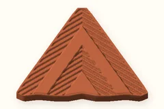
81 × 67 mm
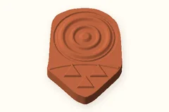
36 × 53 mm
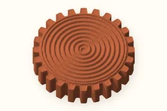
31 × 31 mm
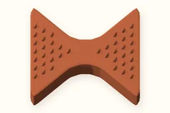
44 × 43 mm
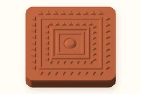
45 × 45 mm
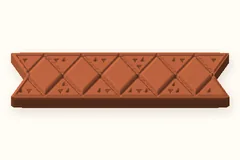
83 × 21 mm
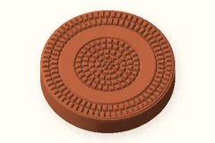
38 × 38 mm
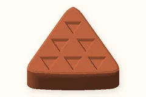
22 × 20 mm
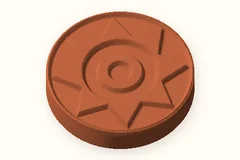
34 × 34 mm
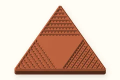
79 × 69 mm
Each stamp has a recessed grip for your thumb and index finger. The motif is mirrored and its relief is inverted so it transfers correctly to clay.
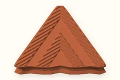
81 × 67 mm
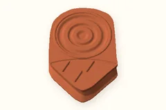
36 × 53 mm
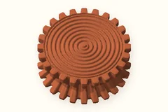
31 × 31 mm
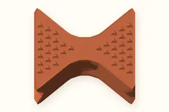
44 × 43 mm
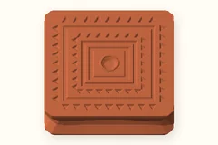
45 × 45 mm
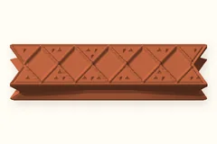
83 × 21 mm
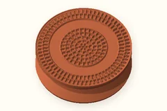
38 × 38 mm
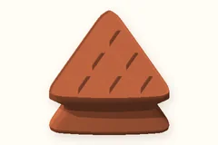
22 × 20 mm
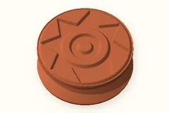
34 × 34 mm
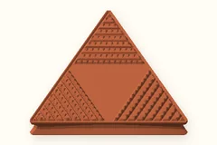
79 × 69 mm
Place the flat base on the print bed with the relief facing up. Both collections are designed for FDM printing without supports in this orientation. Use the layer preview to check that the relief is retained, especially on the smaller pieces.
The models are based on MitoMapa’s original illustrations. The record cards and the El Museo Canario catalogue provide size references from similar objects. The MitoMapa motif keeps its proportions. The thickness, back and grip were designed for use in the classroom.
Teaching models by MitoMapa. Licence and credits. MIT licence for the Three.js viewer.
Explore the pottery in your passport. Switch islands in the viewer and look at the inside, side and base of each vessel.
Download the six new STL files (ZIP · 21 MB)
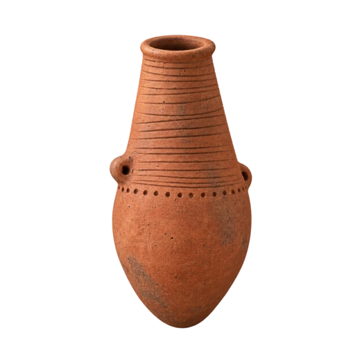
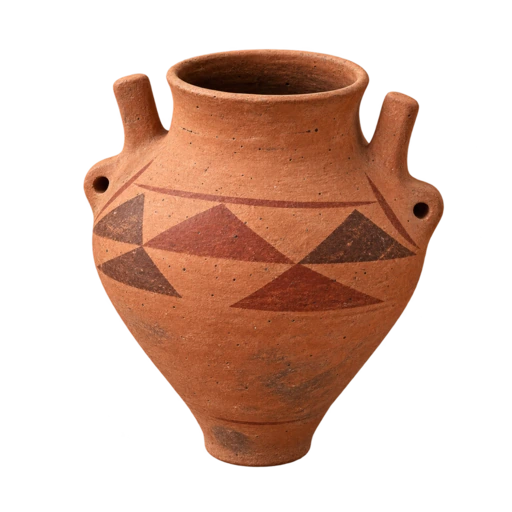
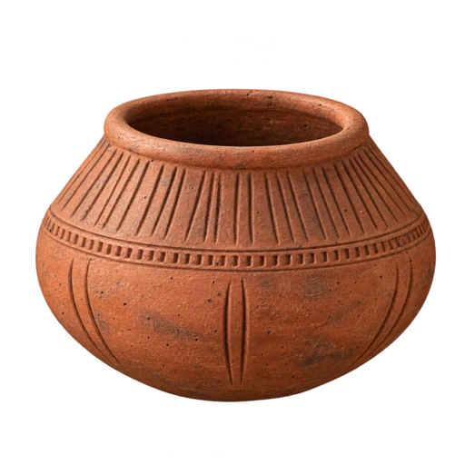
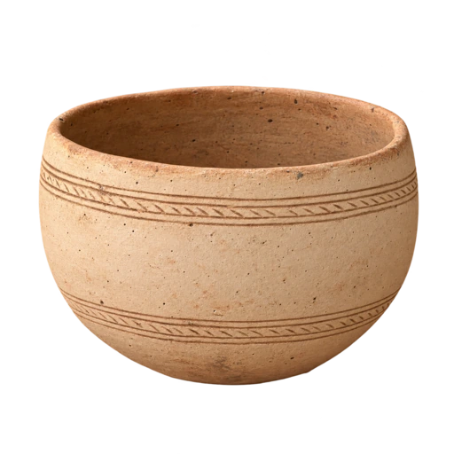
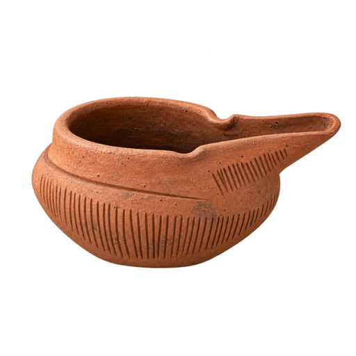
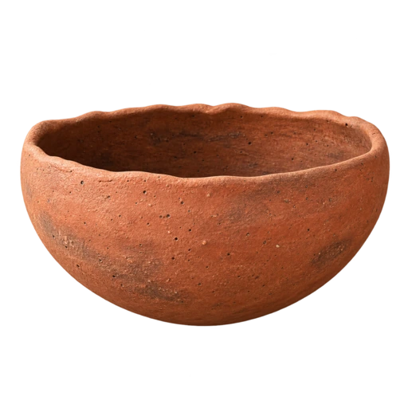
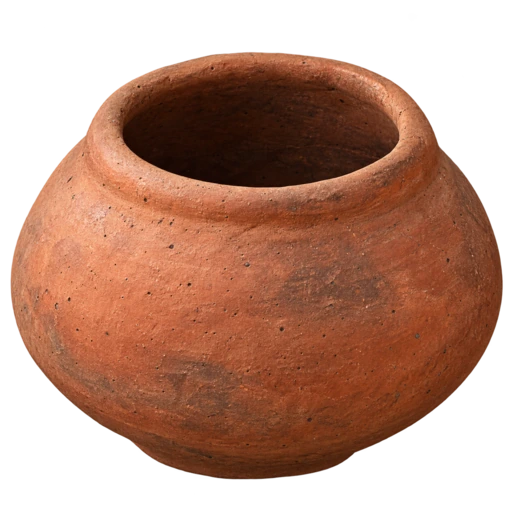
3D printing. Import the STL files in millimetres. Place each flat base on the print bed with the opening facing up. The six models use dimensions chosen for classroom use and are designed to print without supports. Physical print testing is still pending.
Explore the vessel from the inside, side and base.
Printing. Import the STL in millimetres. Check that the print bed has room for the stated dimensions and a margin around the model. Set the flat base on the bed with the opening facing up. The model is designed to print without supports. Physical print testing is still pending.

Patella aspera
This limpet lives on rocky shores and has been recorded on La Graciosa. The model shows the shell’s conical shape, oval outline and ridges running from the apex to the rim.
Model dimensions. 60 × 46 × 19 mm
3D printing. The model shows the outside of the shell. Its flat base lets you print it with the ridges facing up, without supports. Import the STL in millimetres. Physical print testing is still pending.
The AI-generated scenes accompany original stories. The authors supplied the relief map and identified TongApp from the Government of the Canary Islands as its source. A realistic image can still give an inaccurate impression of clothing, objects, faces, buildings, actions or landscapes. The people shown are fictional.
To learn about the past, use different sources and compare their evidence. Many accounts of names and beliefs come from texts written after the conquest and reflect the authors’ perspectives. Archaeology studies material remains, and oral traditions preserve stories and their variants. Use those sources to check details you notice in an illustration.
View the sources for all eight stories.
Primary: Look at an illustration and name two things you can see. Choose one detail that needs checking. With your teacher’s help, consult a source and finish these sentences. “In the picture I see…” “The source explains…” “We still do not know…”
Secondary: Choose a detail and ask a question. Compare a written source with archaeological evidence or a relevant specialist study. Record the author, date, link and what each source supports. Distinguish fact, interpretation and fiction. Look at who acts, who stays in the background and whose ages or roles are missing. Are there stereotypes about gender, age or appearance? Explain a change you would make. Say what remains uncertain.
Review with your teacher: Identify your sources, explain what they support, acknowledge what remains uncertain and describe your proposed improvement. Give your answer aloud or in your notebook. Earning a piece is independent of this optional activity.
The routes use present-day island names. Historical names vary in spelling and meaning, and the records supporting them differ. Many cannot be treated as exact transcriptions of Indigenous languages. The authors say they consulted specialists in the pre-Hispanic Canary Islands. The selection presents historically reported forms and marks uncertainties in the evidence.
Match the names on the map · View the sources and notes on the names.
| Present-day island | Historical name and notes |
|---|---|
| Tenerife | The game uses Achinech. Historical sources also record forms such as Chineche and Achineche. |
| Gran Canaria | Canaria is a historical name of uncertain origin. Reliable records identifying Tamarán as the Indigenous name are lacking. |
| La Palma | Benahoare appears in historical sources. |
| La Gomera | The authors chose Gomara after consulting specialists. The linked bibliography uses Gomera, and evidence for Gomara remains uncertain. |
| El Hierro | The game offers Esero and Eceró. The linked bibliography records Esero. The source does not establish Eceró to the same degree. |
| Fuerteventura | Le Canarien records the name Erbania. |
| Lanzarote | Le Canarien records Tyterogaka. Its spelling varies across transcriptions. |
| La Graciosa | The available evidence was insufficient to establish a documented Indigenous name. |
Notes on the evidence: Studies of the oral tradition of El Hierro support the use of bimbapes here. Wider scholarly agreement and any institutional recommendation remain unconfirmed. The cross episode in Mafasca is evidence about some versions of the legend. Its earliest origins remain uncertain. Compare written accounts with archaeological evidence for a fuller picture.
The passport contains seven recreated vessels and a seashell for La Graciosa. The original pintaderas remain as decorative motifs. Each island had a range of ceramic forms.
The vessels draw on an infographic from the Government of the Canary Islands Canarian Amazigh ceramics by island. The designs reflect differences in form and decoration. The Lanzarote illustration shows a pale coating known as tegue. The earth tones in the other illustrations are artistic choices.
For El Hierro, the authors also provided a photograph of vessels. Their date and any connection to a specific excavated pre-Hispanic object remain unverified. The two short handles in the illustration draw on that photograph. The La Graciosa seashell is a modern symbol of the island’s connection to the sea.
The eight images were created with OpenAI’s image tool on 22 October 2026. The tool does not identify the exact model version. The designs vary from their references. Optimised transparent copies are used on the site. The original PNG files are in the design gallery.
The CC BY-SA 4.0 licence applies where the authors hold the rights. Consulted sources retain their original terms.